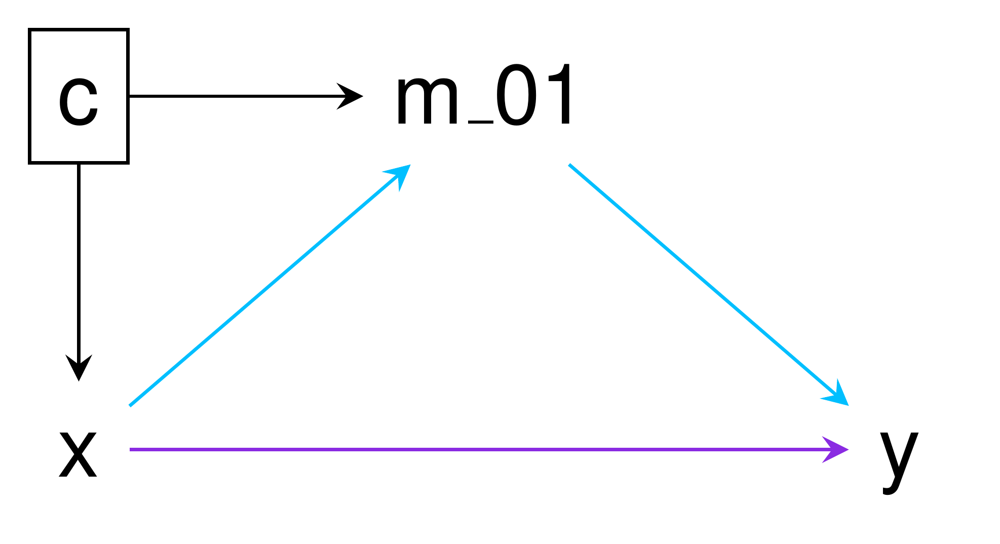

The goal of mediator is to conduct causal mediation analysis under the counterfactual framework, allowing interation between the exposure and mediator (1). Currently, mediator estimates the controlled direct effect (CDE), natural direct effect (NDE), natural indirect effect (NIE), total effect (TE), and proportion mediated (PM), along with 95% confidence intervals for each.
Installation
You can install mediator from GitHub with:
# install.packages("devtools") devtools::install_github("gerkelab/mediator")
Usage
mediator currently implements mediation analyses for binary and continuous exposures/mediators/outcomes, as well as censored time-to-event outcomes. As with all causal inference approaches, estimate validity relies on appropriate assumptions and model specification on the part of the user.
To demonstrate usage, we consider the mediation_example data included with mediator. This data set contains exposure/treatment variable x (binary), mediator variables m (continuous) and m_01 (binary), outcome variable y (binary), and confounder c (continuous).

In the above DAG the path for the NIE is shown in blue while the path for the NDE is in purple. The TE is the combined effect of both the NIE and NDE. When no interaction between the exposure and mediator exists, the CDE and NDE are the same.
The simplest use case of mediator would be as follows:
mediator::mediator(data = mediation_example, out.model = glm(y ~ x + m_01 + c + x*m_01, family = "binomial", data = mediation_example), med.model = glm(m_01 ~ x + c, family = "binomial", data = mediation_example), treat = "x") ## # A tibble: 5 x 4 ## Effect Estimate `Lower 95% CI` `Upper 95% CI` ## <chr> <dbl> <dbl> <dbl> ## 1 CDE 0.279 0.0581 1.34 ## 2 NDE 0.517 0.226 1.19 ## 3 NIE 1.05 0.905 1.22 ## 4 Total Effect 0.542 0.235 1.25 ## 5 Proportion Mediated -0.0553 NA NA
A data frame (printed to the console if not assigned to an object) is returned containing the point estimates and 95% confidence intervals.
Since the outcome was a based on a binomial logistic regression, the results from this example are interpreted as a series of odds ratio. When the outcome model is a linear regression, the results are intrepreted as average values. Relative risks can be used for binary outcomes when appropriate and thus intrepreted under that model.
In this example, based on the CDE, when m_01 = 1, the effect of x on y is 0.28; while according to the NDE, when m_01 is the value observed in the absense of x (x = 0), the effect of x on y is 0.52. The NIE tells that the effect of x on y through m_01 is 1.05. The TE of x on y , both direct and indirect, is 0.54.
Since the TE is the combined effect of the NDE and NIE, statistically significant effects can be observed in opposite directions and result in a TE that is roughly equal to 0.
Additional resources
Slides and abstract for a talk on mediation analysis using mediator given at the 2020 Best Statistical Practice Conference.
For an in-depth explanation of mediation analysis or complementary tools for SAS or SPSS users, please check out Linda Valeri and Tyler VanderWeele’s paper and macros, which are available on VanderWeele’s website.
The parametric model-based approach of mediator differs from another R package, mediation, which conducts mediation analysis under a non-parametric framework.
Additional examples of mediator are available under vignettes, as well as comparisons of mediator and the SAS macro %mediation.